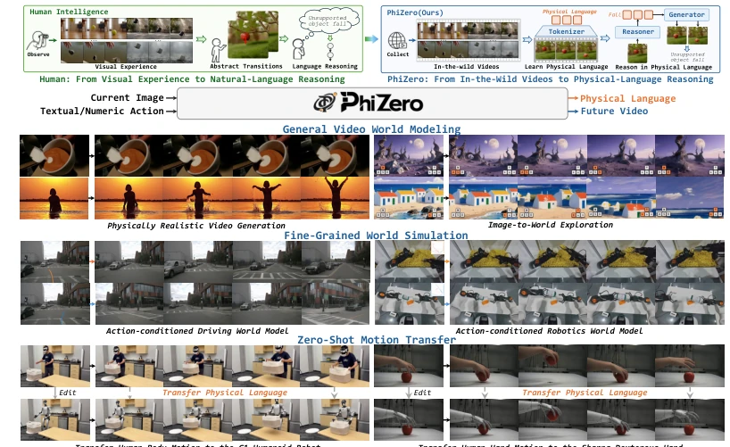
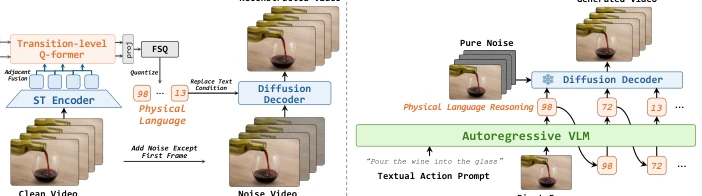
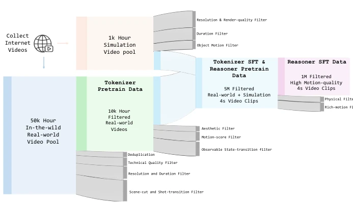
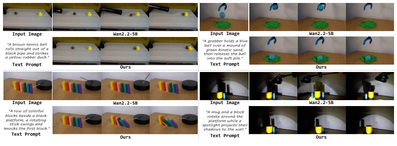
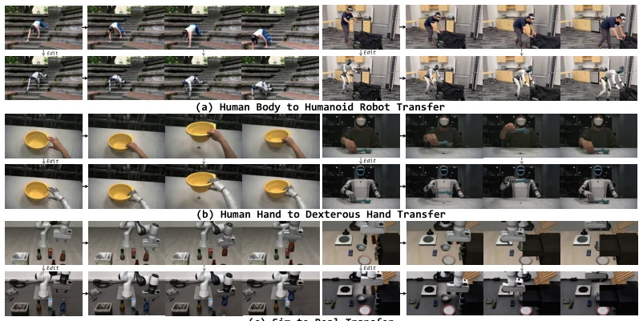

The concept of "Physical Language" proposed in this paper sounds very appealing, attempting to decouple dynamics and appearance using discrete symbols. But essentially, it still relies on VLM common sense to "guess" physical laws, not a true physics engine (as noted in the footnote). Although the Reason-then-Render architecture separates reasoning and rendering, it increases reasoning latency. The experimental data volume is huge, but whether the improvement in physical consistency stems from finer tokens or VLM overfitting is debatable. However, zero-shot motion transfer indeed demonstrates the potential of Physical Language as a universal interface, at least more controllable than pure pixel prediction. It does not learn physics formulas directly, but inducts from videos, which is both an advantage and a limitation.
研究动机Motivation
现有世界模型如 Wan2.2 (Wan et al., 2025) 和 Cosmos (Agarwal et al., 2025) 直接在像素空间预测未来，导致物理动态隐含在高维视觉特征中，难以显式推理。人类通过自然语言抽象经验，但自然语言太粗糙，无法表达细粒度状态转移。论文指出主流方法常导致物理不一致 (OpenAI, 2025; Google DeepMind, 2026)。因此需要一种细粒度的离散表示来显式建模状态转移，而非直接预测像素，从而支持可控的交互模拟。
Existing world models such as Wan2.2 (Wan et al., 2025) and Cosmos (Agarwal et al., 2025) predict the future directly in pixel space, leading to physical dynamics being implicit in high-dimensional visual features, making explicit reasoning difficult. Humans abstract experience through natural language, but natural language is too coarse to express fine-grained state transitions. The paper points out that mainstream methods often lead to physical inconsistency (OpenAI, 2025; Google DeepMind, 2026). Therefore, a fine-grained discrete representation is needed to explicitly model state transitions, rather than directly predicting pixels, thereby supporting controllable interactive simulation.

Figure 1: We introduce PHIZERO, a physical world model that learns a compact discrete physical language from in-the-wild videos. It reasons world evolution in this space and renders the inferred transitions into videos, enabling physically realistic and interactive world modeling, fine-grained action-conditioned simulation, and zero-shot motion transfer.
方法Method
整体采用 Reason-then-Render 范式。首先，Physical Language Tokenizer 利用 Transition-level Q-Former 提取相邻帧潜变量间的转移特征，通过 FSQ 量化为离散物理语言序列，配合 Diffusion Decoder 重构视频，确保瓶颈层只关注状态变化。其次，Physical Language Reasoner 基于 Qwen3-VL (Bai et al., 2025a) 初始化，自回归预测物理语言序列。训练分两阶段：Tokenizer 先预训练再 SFT，Reasoner 先继续预训练再针对高运动质量数据微调。数据包含 50K 小时真实视频和仿真数据，通过严格过滤确保物理信息丰富。采用 Curriculum Training 逐步增加分辨率和时长。
Overall adopts the Reason-then-Render paradigm. First, the Physical Language Tokenizer utilizes a Transition-level Q-Former to extract transition features between adjacent frame latent variables, quantized into a discrete physical language sequence via FSQ, paired with a Diffusion Decoder to reconstruct the video, ensuring the bottleneck layer focuses only on state changes. Second, the Physical Language Reasoner is initialized based on Qwen3-VL (Bai et al., 2025a), autoregressively predicting the physical language sequence. Training is divided into two stages: Tokenizer is pre-trained first then SFT, Reasoner is continued pre-trained first then fine-tuned on high motion quality data. Data includes 50K hours of real video and simulation data, strictly filtered to ensure rich physical information. Curriculum Training is adopted to gradually increase resolution and duration.

Figure 2: The overall pipeline of PHIZERO. (a) The Physical Language Tokenizer uses a transition- level Q-Former to compress video state transitions into a compact discrete physical language. A diffusion decoder reconstructs the video conditioned on the physical language and the first frame. (b) The Physical Language Reasoner uses an autoregressive VLM to predict a physical-language sequence from the first frame and a textual action intent. The trained diffusion decoder then renders the inferred state transition into a future video.

Figure 3: Hierarchical data curation pipeline. We collect Internet videos to construct a 50K-hour pool of in-the-wild real-world videos and a 1K-hour pool of simulation videos. Progressive filtering yields 10K hours for tokenizer pretraining, 5M four-second clips for tokenizer SFT and reasoner pretraining, and 1M motion-rich four-second clips for reasoner SFT.
On generation benchmarks such as Physics-IQ Verified and PhyGround, PhiZero's IQ-Score and Physics Score are both superior to Wan2.2-14B and Cosmos3-Super (Agarwal et al., 2026). Understanding tasks such as IntPhys2 and YoCausal also perform excellently. Ablation studies prove that Diffusion Decoder and Pure-noise Warm-up are crucial for performance. Additionally, the paper demonstrates the transferability of Physical Language, capable of zero-shot transferring human actions to the G1 humanoid robot and Sharpa manipulator (Fig 8), and supports Sim-to-Real transfer, proving its potential as a universal control interface. In terms of physical realism, it captures collision consequences better than baselines.

Figure 4: Qualitative comparison on Physics-IQ Verified. Compared with the Wan2.2-5B baseline, PHIZERO better captures the physical consequences of interactions, including collision-induced object displacement, gravity-driven deformation, chain reactions, and dynamically changing shadows.

Figure 8: Zero-shot cross-embodiment and sim-to-real transfer with physical language. We en- code source state transitions into physical-language sequences and render them conditioned on edited first frames specifying new embodiments or visual domains, enabling zero-shot cross-embodiment and sim-to-real transfer.